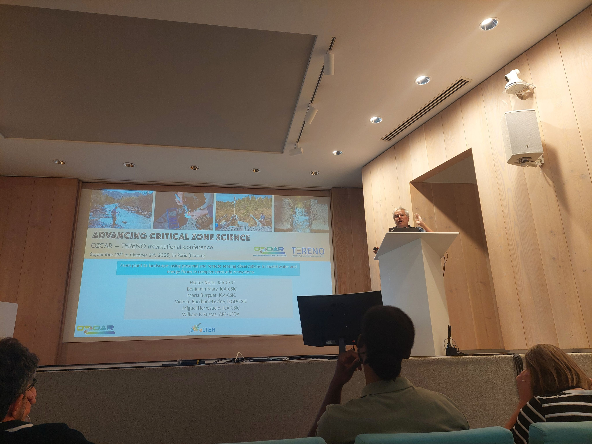
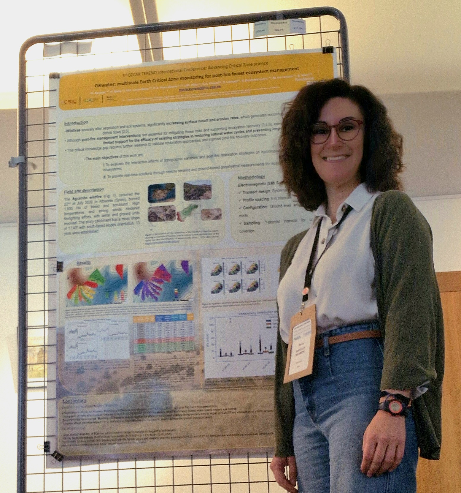

Ozcar-Tereno 2025 in Paris:research on the Critical Zone
by GRwater Research Team | 2025/10/13
Success in Paris: Highlighting Water and Energy Research
Our research group successfully attended the prestigious Ozcar-Tereno 2025 International Conference in Paris, a crucial event for critical zone scientists worldwide. Our participation allowed us to present two core aspects of our ongoing work, ranging from fundamental modeling of complex ecosystems to practical, multi-scale monitoring for post-fire forest management.
1. From Plant to Landscape: Modeling Water and Energy Fluxes
Dr. Héctor Nieto delivered a compelling talk titled: “From plant to landscape: using proximal and remote sensing observations to model water and energy fluxes in complex semi-arid ecosystems.”
The presentation addressed the significant challenges in modeling the Earth Critical Zone’s water fluxes in heterogeneous canopies under semi-arid climates. These challenges stem from complex factors like deep root systems, the decoupling of surface and root-zone soil moisture, and differential radiation caused by canopy heterogeneity.
Key Takeaways from Dr. Nieto’s Talk:
- Tools & Techniques: The work demonstrated the power of combining proximal thermal-infrared radiometers, very high-resolution UAV imagery, and satellite observations to improve energy and water balance models.
- Validated Application: Results from diverse sites (vineyards, savannas, and orchards) were successfully implemented in the Two-Source Energy Balance model and rigorously validated against Eddy Covariance sites across four continents.
- Open Source Commitment: This research was made accessible to the global scientific community via an Open Source package, reinforcing our commitment to accessible science.

2. GRwater: Multiscale Monitoring for Post-Fire Recovery
Dr. Maria Burguet presented a poster on the GRwater project, focusing on: “GRwater: multiscale Earth Critical Zone monitoring for post-fire forest ecosystem management.”
This work tackles the vital issue of post-fire hillslope restoration and its impact on reducing soil erosion, restoring hydrological function, and supporting vegetation recovery. The study centers on a sub-catchment of the Mundo river (Albacete, SE Spain) following a 2020 wildfire, evaluating various restoration strategies (mulching, log-erosion barriers, etc.).

The Two Pillars of the GRwater Project:
- Robust Monitoring Framework: Developing advanced methods for monitoring soil moisture using ground-based geophysical techniques and Remote Sensing (RS).
- Advanced Modeling: Utilizing the collected data to build energy and water balance models that accurately describe soil water distribution and its interactions with the atmosphere.
GRwater aims to be a practical tool to improve forest management practices and reduce environmental risks by integrating multi-scale data to enhance water predictions and develop key proxies for water accounting.
Concluding Remarks
The Ozcar-Tereno conference provided an invaluable platform for validating our core methodologies and establishing new collaboration pathways. The feedback received on both the complex modeling of semi-arid fluxes and the practical implementation of the GRwater system will significantly influence the next phases of our research.